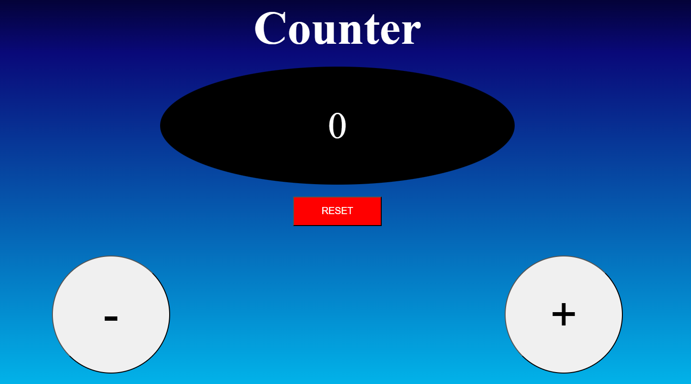
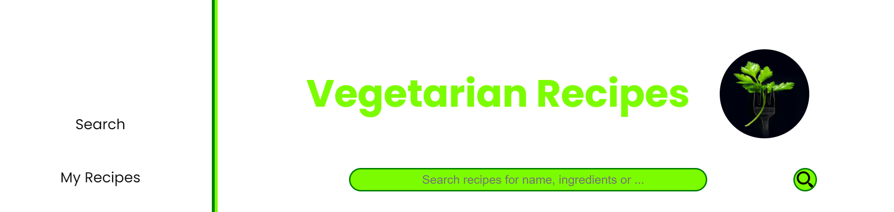

Projects
Portfolio
Italian language
At the moment the site cannot be visited.
It is still under construction
It is still under construction

It is the same website you are visiting right now but in Italian
I mostly used HTML and CSS as well as some Javascript functions
I also chose to use Bootstrap as the CSS framework
Counter in JavaScript
basic JS functions
At the moment the site cannot be visited.
It is still under construction
It is still under construction

A simple counter made using exclusively javascript.
The elements displayed were also created using Js files and not written in the HTML file.
React project
A recipes search-site built with React
At the moment the site cannot be visited.
It is still under construction
It is still under construction

A React application for finding vegetarian recipes.
Make API calls via Axios and create dynamic components.